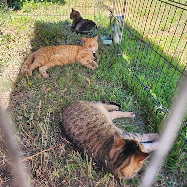
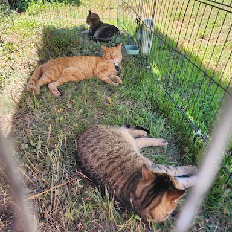
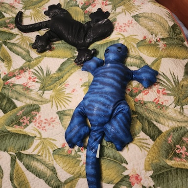

il n'y a rien de mieux qu'une sieste à l'ombre sur le gazon.
there is nothing better than a nap in the shade touching grass.

Bonjour! Ceci est le blogue de Benoit Hamelin, pour partager des cailloux brillants et des bâtons tordus bizarrement avec mes amis. Vous êtes bienvenu de devenir l'un d'eux!
J'aime bien partager mon travail artistique, de même que des notes sur ma recherche en science des données et en cyber sécurité. Aussi des pensées. Et des memes. Et des photos de chats. Et peut-être des recettes. D'accord, je n'ai pas vraiment de thème, voyez? Il n'y a pas non plus d'horaire de publication. On se la joue relax, venez jeter un coup d'oeil une fois de temps en temps.
Ohai! This is Benoit Hamelin's blog, to share shiny pebbles and gnarly sticks with my friends. You're welcome to become one of them!
I like to share my artwork, as well as notes on my research in data science and cyber security. Also random thoughts. And memes. And cat pictures. And maybe recipes. Look there is no fixed topic, ok? There is no update schedule either. We play it easy, just drop by every now and then.
il n'y a rien de mieux qu'une sieste à l'ombre sur le gazon.
there is nothing better than a nap in the shade touching grass.

que même les lézards lestés préfèrent se tenir par la main chastement que de se coller en amoureux.
that even weighted lizards would rather hold hands demurely than cuddle like the lovers they are.

... est une artiste et tourneuse de stylos. J'adore son travail!
... is a visual artist and pen turner. I love her work!
Je suis en train de programmer un jeu. Pour en maximiser l'accessibilité, j'ai cherché comment la communauté des outils de visualisation facilite l'accès aux diagrammes aux gens daltoniens. Il existe plusieurs types de daltonisme, mais certaines règles de pouce ont été largement adoptées par les designers. L'une d'elles est la palette de couleurs Okabe-Ito:
I am coding a video game. To maximize its accessibility, I was looking how the visualization community faciliates access to diagrams to coloblind people. There are many types of colorblindness, but some rules of thumb have been largely adopted by designers. One of them is the Okabe-Ito color palette:
J'aime beaucoup le blogue MediaChomp, malgré que son propriétaire y déploie de beaucoup trop nombreuses (et agaçantes) publicités. L'histoire liée ci-haut est très intéressante, malgré qu'elle requière mort et souffrance d'innombrables êtres pour soutenir rien de plus sensé que le point d'orgueil d'une déesse au sein d'un panthéon jaloux.
I love the MediaChomp blog, even though its owner deploys too many annoying ads. The story linked above is interesting, although it makes many beings suffer and die for nothing more sensible than holding some goddess' pride up against a jealous pantheon.